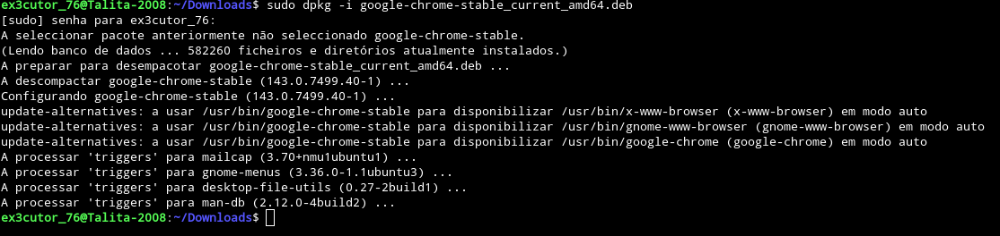
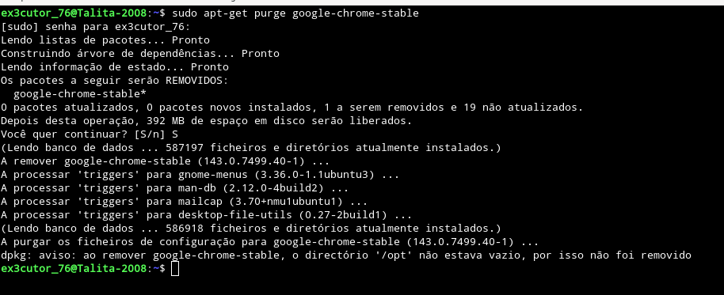

Como instalar, desinstalar e atualizar coisas no termianl:
Eis a primeira preocupação de alguém que começa no Linux pela primeira vez "Como diabos eu instalo as coisas aqui?"
E relaxa colega que aqui você aprende rápido.
E bem eu vou ensinar no modo de distribuições derivadas de Debian/Ubuntu, as derivadas do Arch infelizmente não sei
mas relaxa algum dia pode ter uma atualização aqui no site ensinando algumas coisas do Arch que inclusive é a distro Linux
para usuários avançados que bem ela só não fica em primeiro lugar dos difíceis por causa do Gentoo que é um inferno.
Instalar:
sudo apt install nome-do-programa = Instalar coisas via apt.
flatpak install nome-do-repositório-flatpak = Instalar coisas via flatpak.
sudo snap install nome-do-programa = Instalar coisas via Snap.
sudo apt-get install nome-do-programa = Instalar coisas via apt-get.
Desinstalar:
sudo apt remove nome-do-programa = Desinstalar coisas via apt (Use o comando: apt list para ver os programas.)
sudo apt purge nome-do-programa = Desinstalar completamente (A diferença desse comando para o anterior é que esse desinstala
completamente tudo, inclusive os restos dos arquivos.)
flatpak uninstall nome-do-programa = Desinstala coisas via Flatpak (Se quiser saber qual o nome do programa use o comando: flatpak list)
sudo snap remove nome-do-programa = Desinstala coisas via Snap (Se quiser saber qual o nome do programa use o comando: snap list)
sudo apt-get remove nome-do-programa = Desinstala programas via apt-get.
Atualizar:
sudo apt update = Ele lista os arquivos e programas que precisam de atualização.
sudo apt upgrade = Ele atualiza os arquivos e programas que precisam de atualização.
Mas se caso você quer ver a lista e atualizar ao mesmo tempo use: sudo apt update && apt upgrade
Flatpak update = Procura atualizações e atualiza programas instalados via flatpak.
sudo apt-get update = Faz uma lista de arquivos e programas que precisam ser atualizados.
sudo apt-get upgrade = Atualiza os programas que precisam de atualização.
Como baixar arquivos com extensão .deb:
sudo dpkg -i "arquivo.deb":

Aqui por exemplo no terminal eu estou instalando um arquivo .deb do chrome onde eu usei o comando: sudo dpkg -i google-chrome-stable_current_amd64.deb (que é um
arquivo .deb que instalei no site da google.)
Imagem final de que realmente funcionou:

sudo apt-get purge "nome-do-programa":
E certo mas, lembro-me que odeio usar google, então, como farei pra desinstalar? Simples:

No caso por aqui utilizei o comando: sudo apt-get purge google-chrome-stable
Que no caso com esse comando vai desinstalar completamente o chrome e alguns de seus arquivos que ficam no computador
(Que inclusive consome muita memória e seu computador fica lento).